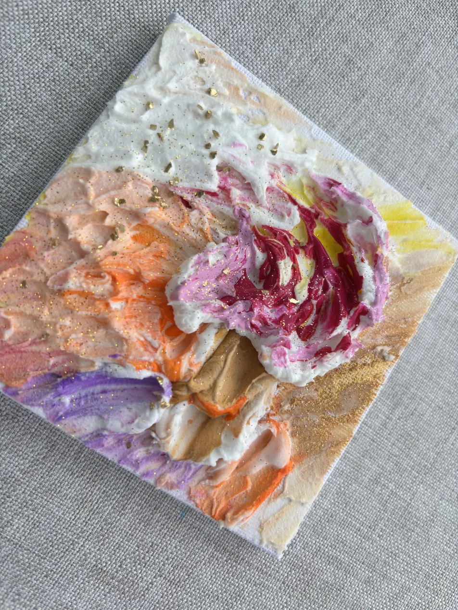
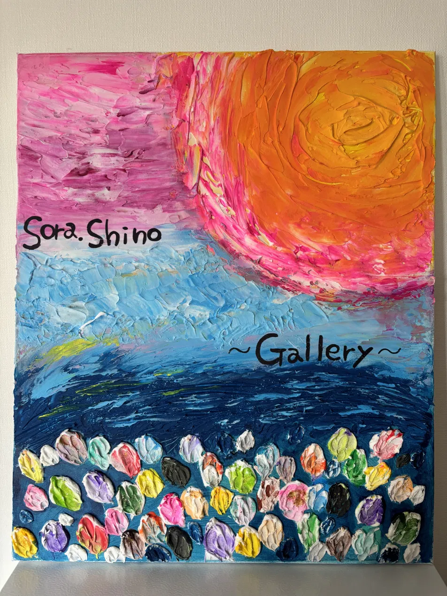
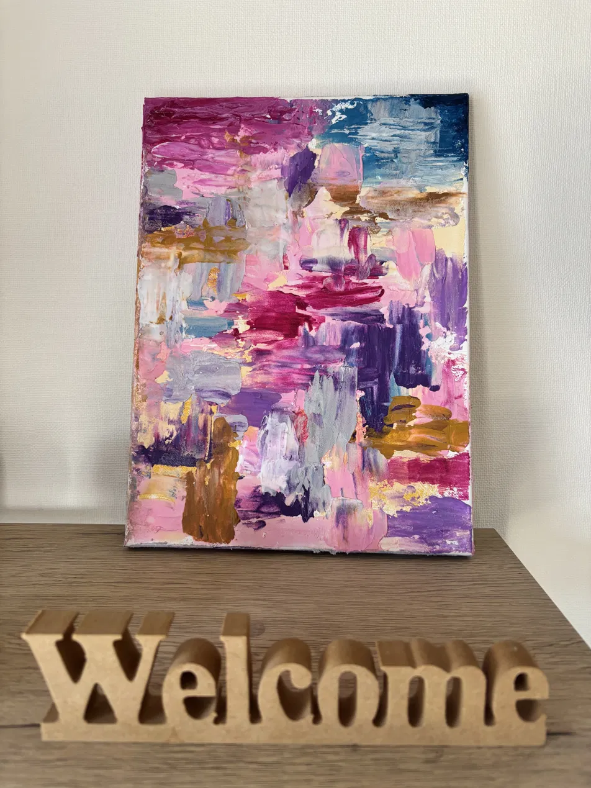

sora.shino — First Exhibition 2026
あなたはいま、何を感じていますか。
2026.11.15 sat — 10:00–17:00
2026.11.16 sun — 10:00–15:00

ずっと、正解を探して生きてきた。
ちゃんとしなきゃ。
強くいなきゃ。
期待に応えなきゃ。
そうしているうちに、いつのまにか
「自分がどう感じているか」より
「どうあるべきか」ばかりを見ていた。
苦しいのか、寂しいのか、本当は嫌なのか。
嬉しいとか、楽しいとか——
それすらも、わからなくなっていた。

この作品たちは、答えを持っていない。
色、厚み、重なり。
言葉にならなかった感覚が、そのまま置いてある。
同じ作品が、日によって違って見える。
今日は力強く、眩しいくらいに見える。
別の日には、重さの中にある静けさが見える。
光が差してくるように見える朝もある。
その感じ方に、正解はない。
どう見えても、どう思っても、それでいい。
むしろ、それを楽しんでほしい。

ずっと、正解のある生き方をしてきた。
だから、自分がどう感じているか、
ずっと、見ないようにしてきた。
日常でも、ふと思い出してほしい。
Exhibition Info
sora.shino
Artist / Texture Art
18歳から約20年間、会社員として生きてきた。
子どもの頃、絵を描くことがずっと嫌いだった。
「自由に描いていい」という言葉が、怖かった。
お手本と同じものが描けない。
どうすればいいか、わからなかった。
正解がないと、動けなかった。
2025年7月、テクスチャーアートに出会う。
重曹アートから始め、今はモデリングペーストを使いながら、独学で作り続けている。
うまく描こうとしなくていい、と気づいたとき、
言葉にならなかったものが、
色と厚みと重なりになって、出てきた。
ご来場・作品についてのお問い合わせ